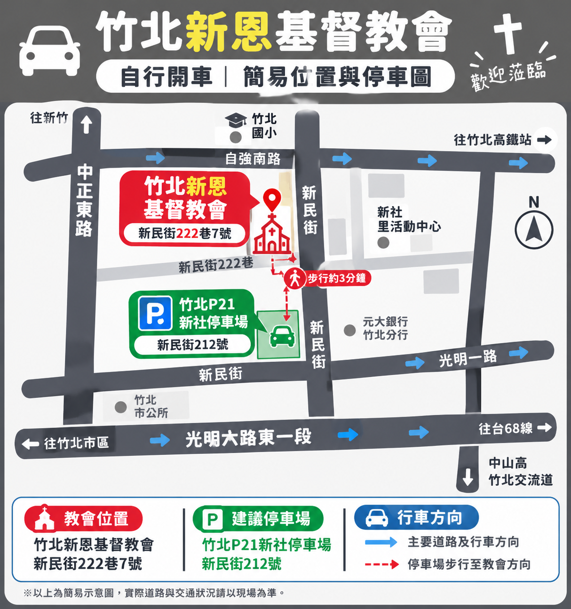

CONTACT & LOCATION
聯絡與交通資訊
📌 聯絡資訊
傳道同工
林明月牧師
行政同工
陳玉萍、陳秀梅 姊妹
辦公 / 上班時間
二、六：8:30 - 17:00（12:00 - 13:30 午休）
日：8:30 - 13:30
教會地址
新竹縣竹北市新民街 222 巷 7 號
聯絡電話
03-5559956
電子郵件
new.graces@gmail.com
🚗 交通指南
-
搭乘竹北市民免費公車
- 60路公車：搭乘後留意「新民街」站。
- 61路公車：可查詢是否有適合的班次及下車站點。
- 建議於「新民街」附近站牌下車，再步行前往教會。
- 出發前請確認公車班次及行駛時間（假日班次可能與平日不同），建議使用新竹縣智慧公車查詢即時資訊。
-
從竹北火車站出發
- 查詢可轉乘的竹北市區公車，選擇往新民街方向的班次，於鄰近教會站牌下車後步行前往。
-
從高鐵新竹站出發
- 前往公車轉乘區，查詢往竹北市區的公車，轉乘可抵達新民街附近的路線後步行至教會。
-
自行開車與停車資訊
建議導航至「竹北P21新社停車場」（新民街212號）停放，停妥後步行約3分鐘即可抵達教會。
